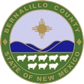

About The DNA History Project and the Downtown Neighborhoods Association
The DNA History Project was funded by a grant from the
Bernalillo County Neighborhood Outreach Program.
The grant proposal for the DNA History Project was submitted to the Bernalillo County Cultural Affairs Department on November 1, 2012.
As described in the history below the downtown neighborhoods have always been diverse in terms of race, ethnicity and socioeconomic class. Today DNA is composed of many long-time residents as well as new arrivals, especially young families that find the smaller houses fit their budget with a highly walkable/bikeable location. The DNA History Project was conceived as an opportunity to bring community residents together, through shared images and stories about the part of Albuquerque they call home. The images and stories are now part of an on-line archive of the community as it was in 2013AD in the DNA.
Chan Graham
Board Member and DNA History Project Director
In 1972, a small group of Downtown residents decided that we would no longer watch as our communities were systematically abandoned by both government and business. Eventually, DNA became a model for neighborhood organization across the city, and today, more than 300 associations exist to improve their neighborhoods.
Nearly 42 years ago, we were energized by few passionate principles. First, we believed our streets added up to living neighborhoods that are diverse, lively and lovely. The abbreviation for Downtown Neighborhoods Association, DNA, was perfect, because that's the name of the molecule that is the foundation of life. Downtown neighborhoods are the heart of the city. Another principle was that the DNA organization should keep communications open with everyone in the community, through the newsletter, talking with neighbors, and through events that brought people together.
The issues of 42 years ago were so pressing that it's hard to say which had the highest priority, but zoning emerged as the number one issue. We saw homes taken over as offices or chopped up into small units. One problem was that much of the area was zoned for office use when city planners dreamed of a huge central business district extending almost to Old Town. So DNA and City planners worked for nearly two years on what became the first sector development plan. Through zoning and other policies, it recognized that Downtown was a place for people to live. Included in the plan were provisions for historic designations that recognized the unique architecture of our neighborhoods and houses. It rewarded those owners who maintained their historic houses.
One of the most serious issues to face the neighborhood was the closure of Lew Wallace School in the late 1970s, despite a vigorous campaign to keep it open for our new, young families. The school board not only closed the school but told us they would NEVER reopen it! Never say ‘never' to DNA. It took DNA ten years, but we finally got Lew Wallace back, and today, it is one of the best elementary schools in the city.
DNA was the first neighborhood to welcome infill development that was compatible with our area. So from the beginning we kept the communications lines open with developers. We welcomed new townhouses, small apartment buildings and congenial commercial developments built, such as the Carousel Apartments, the former Stephen's restaurant, the Palms redevelopment, the former Landmark supermarket, etc. We opposed others. We worked on quality-of-life issues. Neighborhood watches, the landscaped Lomas Pedestrianway, Mary Fox Park, the rebuilding of Mountain Road: all these and more happened because of DNA's initiatives.
 The DNA History Project was made possible with a Bernalillo County Neighborhood Outreach Grant.